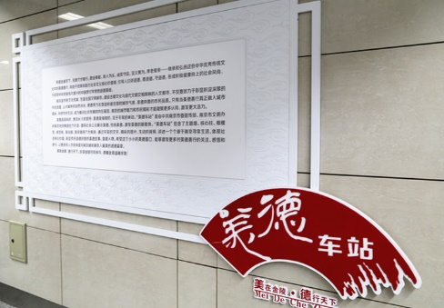
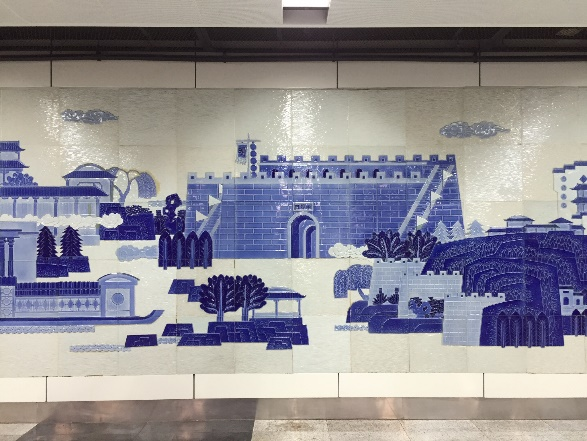
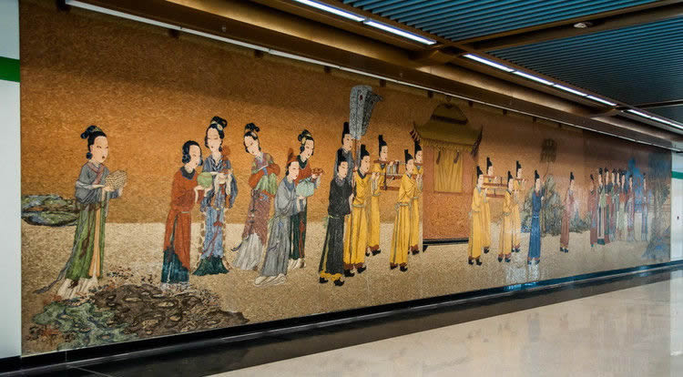
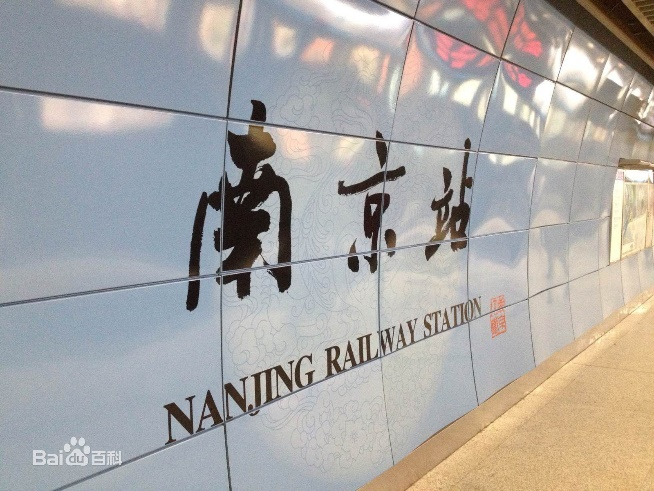

南京站・美德车站  |
地铁1号线南京站北站厅中“美德”的主题体现在站厅装饰的每个角落，带有祥云图案的天蓝色立柱上，印有“诚信、民主、法治、友善、公正、爱国”的社会主义核心价值观。站厅顶上共悬挂3列波纹状的宣传牌，中间一列介绍的是省内的美德模范，用双臂接住跳楼女生的最美宿管阿姨阮桂娇（第四届江苏省道德模范提名奖）便是其中一位。旁边两列悬挂的宣传牌上，则写有市民耳熟能详的美德箴言，如“民生在勤，勤则不匮”等，一直延续到出入口的通道内。 |
南京站1号线车站分南北两个站厅，北站厅文化墙的主题为“金陵揽胜”，是一面具有金陵地标的青瓷花钢板雕刻作品，其中可以看到总统府、中华门、中山陵等地标建筑错落其中，展示了古城南京的山川美景与人文内涵。 
南京站3号线车站艺术墙的主题为“元春省亲”，创作人金延林对画面中的每一处细节都经过了严谨的考据。墙上贾府迎接元春的女眷掩映在青松翠竹下，有的满脸期待、有的腼腆羞涩。这个场景在以往很多画家的笔下都呈现成贾府上下阖府相迎，这显然不对，因为《红楼梦》把封建礼制体现得淋漓尽致，突出内外有别、男女有序。因此在“元春省亲”的艺术墙上，所有官职的男子在府门外迎接，女眷则在宅内（二门以内）迎接。在艺术墙中间位置，则描绘了省亲队伍中的核心：八人大轿和里面的贾元春。专家查阅妃嫔出行仪式规格和轿辇规格后，在画面中画了符合贵妃身份的黄顶红厢八人大轿。元春省亲的盛大场面，契合南京站“回家”的主题。  |
地理位置
南京站是南京地铁1号线和南京地铁3号线的换乘车站，位于南京火车站站房地下。  |
出入信息
|